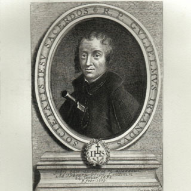

Isusovački blaženici
Svećenik · Mučenik
Bl. William Ireland
1636.–1679.
William Ireland vodio je financije engleske isusovačke misije nakon desetljeća služenja u Flandriji. Lažno svjedočenje Titusa Oatesa odvelo ga je na Tyburn.
Tekst je preveden i prilagođen uz pomoć umjetne inteligencije.

Izvor slike
- Spomendan
- 24. siječnja
- Zaštitništvo
- Nije navedeno u izvoru
- Životni vijek
- 1636.–1679.
- Datum smrti
- 24. siječnja 1679.
U kalendaru zbirke koristi se dan smrti. Taj datum nije zasebna potvrda liturgijskoga spomendana.
Životopis
William Ireland stupio je u isusovački novicijat s devetnaest godina. Nakon teologije u Liègeu zaređen je 1667. Poučavao je u Saint-Omeru i bio ispovjednik klarisa u Gravelinesu. U Englesku se vratio 1677. te pod imenom Ironmonger skrbio za financije misije.
Uhićen je nakon izmišljene optužbe da isusovci pripremaju ubojstvo kralja Karla II. Iako je imao svjedoke da nije bio u Londonu u navedeno vrijeme, krivokletna svjedočenja prevagnula su na sudu. S Johnom Groveom pogubljen je na Tyburnu 24. siječnja 1679., među prvim žrtvama Oatesove prijevare. Sudski je postupak obilježila uporaba lažnih svjedoka.
Tekst je preveden i prilagođen uz pomoć umjetne inteligencije.